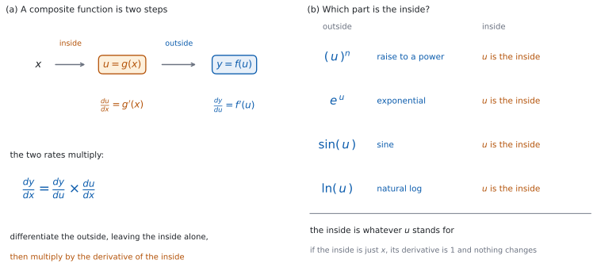

SL 5.6a — Standard derivatives and the chain rule（標準的な導関数と連鎖律）
- \(x^{n}\) の微分を、\(n\) が有理数のときにも使える（\(\sqrt{x}\) や \(\dfrac{1}{\sqrt{x}}\) など）。
- \(\sin x\)、\(\cos x\)、\(e^{x}\)、\(\ln x\) の導関数を書ける。
- \(\sin\) と \(\cos\) の導関数が、\(x\) がラジアンのときの式であることを説明できる。
- これらの和と定数倍を、項ごとに微分できる。
- composite function（合成関数）の外側と内側を見分けられる。
- chain rule（連鎖律）を使って、合成関数を微分できる。
- 連鎖律を使った答えを、形で確かめられる。
The idea
1. 有理数の指数
SL 5.3 の規則は、\(n\) が有理数でもそのまま使えます。
\[ f(x) = x^{n} \quad \Longrightarrow \quad f'(x) = nx^{n-1} \tag{1}\]
| もとの形 | 指数の形 |
|---|---|
| \(\sqrt{x}\) | \(x^{\frac{1}{2}}\) |
| \(\dfrac{1}{\sqrt{x}}\) | \(x^{-\frac{1}{2}}\) |
| \(\sqrt[3]{x}\) | \(x^{\frac{1}{3}}\) |
公式集の 5.3 の欄に、Derivative of \(x^{n}\) として 式 1 が印刷されています。\(n\) に制限は書かれていないので、有理数のときにもこの欄を使えます。
まず指数の形に直してから微分します。 根号のままでは規則が使えません。
\(\sqrt{x}\) は \(x \geq 0\) でしか定義されません。 さらに \(x^{-\frac{1}{2}}\) の形の導関数は \(x = 0\) で値がないので、\(x > 0\) で考えます。
2. 標準的な導関数
| \(f(x)\) | \(f'(x)\) |
|---|---|
| \(\sin x\) | \(\cos x\) |
| \(\cos x\) | \(-\sin x\) |
| \(e^{x}\) | \(e^{x}\) |
| \(\ln x\) | \(\dfrac{1}{x}\) |
公式集の 5.6 の欄に、Derivative of \(\sin x\)、Derivative of \(\cos x\)、Derivative of \(e^{x}\)、Derivative of \(\ln x\) として、この \(4\) つがすべて印刷されています。おぼえる必要はありませんが、どこにあるかは知っておいてください。
\(\cos x\) の導関数だけ、マイナスが付きます。 ここが取りちがえの多いところです。
\(e^{x}\) は微分しても変わりません。 これがこの関数の特徴です。
\(\ln x\) は \(x > 0\) でしか定義されません。 導関数の \(\dfrac{1}{x}\) も、そこで使います。
3. ラジアンで
\(\sin\) と \(\cos\) の導関数の式は、\(x\) が radian（ラジアン）のときのものです。
度で測ると、この式は成り立ちません。 \(y = \sin x\) のグラフの \(x = 0\) での傾きは、ラジアンなら \(1\) ですが、度なら約 \(0.0175\) です。
問題文が度で与えていたら、先にラジアンに直します。 Topic 5 では、ふつうラジアンで与えられます。
導関数に角を入れるときも、ラジアンの値を入れます（SL 3.4）。\(f'\left(\dfrac{\pi}{2}\right)\) のように書きます。
4. 和と定数倍
項ごとに微分して、そのまま足し引きします（SL 5.3）。定数倍はそのまま残ります（SL 5.3）。
\[ \frac{d}{dx}\bigl(a f(x) + b g(x)\bigr) = a f'(x) + b g'(x) \tag{2}\]
この規則は公式集にありません。 SL 5.3 で使ったものと同じ考え方で、\(\sin\)、\(\cos\)、\(e^{x}\)、\(\ln x\) にもそのまま使えます。
かけ算と割り算には、まだ規則がありません。 \(x \sin x\) や \(\dfrac{\sin x}{x}\) は、SL 5.6b です。
5. 合成関数
composite function（合成関数）は、関数を \(2\) 段に重ねたものです（SL 2.5、図 1 (a)）。
\(u = g(x)\) を先に計算し、その答えを \(f\) に入れて \(y = f(u)\) とします。
| 式 | 内側 \(u\) | 外側 \(f\) |
|---|---|---|
| \((3x + 1)^{4}\) | \(3x + 1\) | \(4\) 乗する |
| \(e^{5x}\) | \(5x\) | \(e\) の指数 |
| \(\sin(x^{2})\) | \(x^{2}\) | \(\sin\) |
| \(\ln(x + 7)\) | \(x + 7\) | \(\ln\) |
内側は、かっこの中や、\(\sin\)・\(\ln\) のあとに来るものです（図 1 (b)）。
迷ったら、数を入れてみてください。 \(x\) に数を入れるとして、先に計算するほうが内側です。\(\sin(x^{2})\) なら、まず \(x^{2}\) を出してから \(\sin\) を取るので、\(x^{2}\) が内側です。
内側が \(x\) だけなら、合成ではありません。 \(\sin x\) はそのまま 第 2 節 の表で微分できます。
6. 連鎖律
\(y = f(u)\)、\(u = g(x)\) のとき
\[ \frac{dy}{dx} = \frac{dy}{du} \times \frac{du}{dx} \tag{3}\]
です。これを chain rule（連鎖律）といいます。
公式集の 5.6 の欄に、Chain rule として 式 3 が印刷されています。\(y = g(u)\)、\(u = f(x)\) という文字で書かれているので、どの文字が内側かを確かめてから使ってください。
言葉にすると \(2\) つの手順です。 外側を微分して内側はそのまま残し、それに内側の導関数をかけます。
\[ \frac{d}{dx}f\bigl(g(x)\bigr) = f'\bigl(g(x)\bigr) \times g'(x) \tag{4}\]
7. 使う順番
| 歩 | すること |
|---|---|
| \(1\) | 内側 \(u\) を決める |
| \(2\) | 外側を微分する（内側はそのまま） |
| \(3\) | 内側の導関数をかける |
| \(4\) | 整理する |
内側をさわらないでください。 \((3x+1)^{4}\) の \(2\) 歩目は \(4(3x+1)^{3}\) で、\(4(3x)^{3}\) ではありません。\(3\) 歩目で内側の導関数 \(3\) をかけて、\(\dfrac{d}{dx}(3x+1)^{4} = 12(3x+1)^{3}\) になります。
かけ忘れがいちばん多い誤りです。 内側の導関数をかけたかどうか、必ず確かめてください。
内側が \(ax + b\) の形なら、かける数は \(a\) です。 よく出る形なので、覚えておくと速くなります。
これらの微分は、電卓なしで出します。このページの例題と演習は、すべて手で解ける形です。
角はすべてラジアンです。正確な値が要るときは、\(0\)、\(\dfrac{\pi}{6}\)、\(\dfrac{\pi}{4}\)、\(\dfrac{\pi}{3}\)、\(\dfrac{\pi}{2}\) とその倍数だけを使います。
グラフ画面に \(y = f(x)\) をかくと、求めた \(f'(a)\) の符号が、そこで上がっているか下がっているかと合っているかを確かめられます。
電卓の角の設定をラジアンにしてください。 度のままだと、グラフの形が変わってしまいます。

Why it works
なぜ、有理数の指数でも同じ規則が使えるのでしょうか。 \(\sqrt{x}\) の場合なら、SL 5.1 の考え方でたしかめられます。
\(f(x) = \sqrt{x}\) の、\(x\) から \(x + h\) までの平均変化率を、分子を有理化して書きなおします。
\[ \frac{\sqrt{x + h} - \sqrt{x}}{h} = \frac{\left(\sqrt{x + h} - \sqrt{x}\right)\left(\sqrt{x + h} + \sqrt{x}\right)}{h\left(\sqrt{x + h} + \sqrt{x}\right)} \]
分子は \((x + h) - x = h\) になるので、\(h\) が約分できて
\[ \frac{\sqrt{x + h} - \sqrt{x}}{h} = \frac{1}{\sqrt{x + h} + \sqrt{x}} \]
です。\(h\) を \(0\) に近づけると \(\dfrac{1}{2\sqrt{x}}\) になります。これは \(\dfrac{1}{2}x^{-\frac{1}{2}}\) と同じ式なので、式 1 は \(n = \dfrac{1}{2}\) でも正しいことがわかります。
ほかの有理数の \(n\) については、SL ではたしかめません。 どの有理数でも成り立つことを認めて使います。
なぜ、連鎖律が成り立つのでしょうか。 変化の割合が、\(2\) 段でかけ算になるからです。
\(x\) が少し \(h\) 増えると、\(u\) が少し変わり、その結果 \(y\) も少し変わります。それぞれの変わり方を \(\Delta x\)（\(= h\)）、\(\Delta u\)、\(\Delta y\) と書くと
\[ \frac{\Delta y}{\Delta x} = \frac{\Delta y}{\Delta u} \times \frac{\Delta u}{\Delta x} \]
です（\(\Delta u \ne 0\) のとき、右辺の \(\Delta u\) が約分されるだけです）。\(h\) を \(0\) に近づけると、それぞれが \(\dfrac{dy}{du}\) と \(\dfrac{du}{dx}\) に向かい、式 3 になります。
これは筋道の説明で、証明ではありません。 \(\Delta u = 0\) になる場合を別に扱う必要があり、そこは SL では求められていません。
なぜ、内側の導関数をかけるのでしょうか。 内側が速く動くほど、外側の出力も速く動くからです。
\(u = 5x\) なら、\(x\) が \(1\) 増えるあいだに \(u\) は \(5\) 増えます。外側の変化も \(5\) 倍の速さで起こります。 これが \(\times 5\) の正体です。
なぜ、ラジアンが要るのでしょうか。 \(\sin x\) のグラフの形が、角の測り方で変わるからです。
\(x = 0\) のあたりでは、ラジアンなら \(\sin x\) の値は \(x\) にとても近く、グラフの傾きは \(1\) に近づきます。\(\cos 0 = 1\) なので、\(\dfrac{d}{dx}\sin x = \cos x\) と合います。
度で測ると、同じ角が \(\dfrac{180}{\pi}\) 倍の数になります。 グラフが横に \(\dfrac{180}{\pi}\) 倍に引きのばされるので、傾きはその逆数の \(\dfrac{\pi}{180} \approx 0.0175\) になります。\(1\) ではないので、\(\cos x\) とは合いません。
Worked examples
問題文は英語です。意味が理解できなかったら、問題文の下の「日本語訳」を開いてください。解説は日本語です。
この項目は Paper 1 に出ます。 電卓なしで解ける形にしてあります。角はラジアンです。
例題 1 The function \(f\) is given by \(f(x) = 3\sqrt{x}\), for \(x > 0\). Find \(f'(x)\), giving your answer without a negative index.
日本語訳
関数 \(f\) は \(f(x) = 3\sqrt{x}\)（\(x > 0\)）で与えられます。\(f'(x)\) を、負の指数を使わない形で求めなさい。
まず指数の形に直します（第 1 節）。
\[ f(x) = 3x^{\frac{1}{2}} \]
式 1 を使います。
\[ f'(x) = 3 \times \frac{1}{2} x^{-\frac{1}{2}} = \frac{3}{2}x^{-\frac{1}{2}} \]
負の指数を使わない形に直します。
\[ f'(x) = \frac{3}{2\sqrt{x}} \]
検算（指数）。 \(\dfrac{1}{2}\) から \(1\) を引くと \(-\dfrac{1}{2}\) ✓ \(\dfrac{3}{2}\) ではありません。
検算（符号）。 \(x > 0\) で \(\sqrt{x} > 0\) なので、\(f'(x) > 0\) です ✓ \(\sqrt{x}\) のグラフは右上がりなので、合っています。
検算（大きさの変わり方）。 \(x\) が大きくなると \(\sqrt{x}\) も大きくなり、\(f'(x)\) は小さくなります ✓ \(\sqrt{x}\) のグラフはだんだんゆるやかになります。
検算（\(x = 4\) で）。 \(f'(4) = \dfrac{3}{2 \times 2} = \dfrac{3}{4}\) ✓ \(x = 4\) の近くで \(f(x) = 3\sqrt{x}\) は、\(x\) が \(1\) 増えるあいだに \(\dfrac{3}{4}\) ほど増えます。
\[f(x) = 3x^{\frac{1}{2}}\] \[f'(x) = \frac{3}{2}x^{-\frac{1}{2}} = \frac{3}{2\sqrt{x}}\]
例題 2 The function \(f\) is given by \(f(x) = 2\sin x - 3\cos x + e^{x}\), where \(x\) is in radians.
(a) Find \(f'(x)\).
(b) Find \(f'(0)\).
日本語訳
関数 \(f\) は \(f(x) = 2\sin x - 3\cos x + e^{x}\)（\(x\) はラジアン）で与えられます。
(a) \(f'(x)\) を求めなさい。
(b) \(f'(0)\) を求めなさい。
(a) 項ごとに 第 2 節 の表を使います。
| 項 | 微分すると |
|---|---|
| \(2\sin x\) | \(2\cos x\) |
| \(-3\cos x\) | \(-3 \times (-\sin x) = 3\sin x\) |
| \(e^{x}\) | \(e^{x}\) |
\[ f'(x) = 2\cos x + 3\sin x + e^{x} \]
(b) \(x = 0\) を入れます。
\[ f'(0) = 2\cos 0 + 3\sin 0 + e^{0} = 2 \times 1 + 3 \times 0 + 1 = 3 \]
検算（\(\cos\) の符号）。 \(-3\cos x\) の導関数は \(+3\sin x\) です ✓ マイナスが \(2\) つで、プラスになりました。
検算（\(\sin 0\) と \(\cos 0\)）。 \(\sin 0 = 0\)、\(\cos 0 = 1\) ✓
検算（\(e^{0}\)）。 \(e^{0} = 1\) ✓ \(0\) ではありません。
検算（\(-3\cos x\) の項をグラフで）。 \(\cos x\) は \(x = 0\) で最も大きいので、\(-3\cos x\) は \(x = 0\) で最も小さくなります。求めた \(f'\) のこの項は \(3\sin x\) で、\(3\sin 0 = 0\) ✓ 最も小さくなるところで傾きが \(0\) になっています。
(a) \[f'(x) = 2\cos x + 3\sin x + e^{x}\]
(b) \[f'(0) = 2 + 0 + 1 = 3\]
例題 3 The curve \(C\) has equation \(y = (3x^{2} + 1)^{5}\). Find \(\dfrac{dy}{dx}\).
日本語訳
曲線 \(C\) は \(y = (3x^{2} + 1)^{5}\) という方程式をもちます。\(\dfrac{dy}{dx}\) を求めなさい。
\(1\) 歩目。 内側は \(u = 3x^{2} + 1\)、外側は「\(5\) 乗する」です（第 5 節）。
\(2\) 歩目。 外側を微分します。内側はそのまま残します。
\[ \frac{dy}{du} = 5u^{4} = 5(3x^{2} + 1)^{4} \]
\(3\) 歩目。 内側の導関数をかけます。
\[ \frac{du}{dx} = 6x \]
\[ \frac{dy}{dx} = 5(3x^{2} + 1)^{4} \times 6x = 30x(3x^{2} + 1)^{4} \]
検算（かけ忘れていないか）。 答えに \(6x\) から来た \(x\) の因数があります ✓ なければ、\(3\) 歩目を忘れています。
検算（内側をさわっていないか）。 かっこの中は \(3x^{2} + 1\) のままです ✓ \(3x^{2}\) だけにしていません。
検算（指数）。 \(5\) から \(4\) に下がっています ✓
検算（\(x = 0\) で）。 \(\dfrac{dy}{dx} = 0\) です。\(y = (3x^{2}+1)^{5}\) は \(x = 0\) で最小になるので、傾きが \(0\) になるのは合っています ✓
\[u = 3x^{2} + 1, \qquad \frac{du}{dx} = 6x\] \[\frac{dy}{dx} = 5(3x^{2} + 1)^{4} \times 6x = 30x(3x^{2} + 1)^{4}\]
例題 4 Differentiate each of the following. Where an angle appears, \(x\) is in radians.
(a) \(f(x) = e^{x^{2} + 5}\)
(b) \(g(x) = \sin(4x - 3)\)
(c) \(h(x) = \ln(2x)\), for \(x > 0\). Explain why \(h'(x)\) does not contain a factor of \(2\).
日本語訳
次のそれぞれを微分しなさい。角が出てくるところでは、\(x\) はラジアンです。
(a) \(f(x) = e^{x^{2} + 5}\)
(b) \(g(x) = \sin(4x - 3)\)
(c) \(h(x) = \ln(2x)\)（\(x > 0\)）。\(h'(x)\) に \(2\) の因数が残らない理由を説明しなさい。
(a) 内側は \(x^{2} + 5\)、外側は \(e\) の指数です。
\[ f'(x) = e^{x^{2} + 5} \times 2x = 2x\,e^{x^{2} + 5} \]
(b) 内側は \(4x - 3\)、外側は \(\sin\) です。
\[ g'(x) = \cos(4x - 3) \times 4 = 4\cos(4x - 3) \]
(c) 内側は \(2x\)、外側は \(\ln\) です。
\[ h'(x) = \frac{1}{2x} \times 2 = \frac{1}{x} \]
Explain なので、英語で理由を書きます。
試験ではこう書く
The chain rule gives \(h'(x) = \dfrac{1}{2x} \times 2\). The \(2\) from the inside multiplies a fraction that already has \(2x\) underneath, so the two factors of \(2\) cancel and \(h'(x) = \dfrac{1}{x}\). This agrees with \(\ln(2x) = \ln 2 + \ln x\): the extra term \(\ln 2\) is a constant, and constants differentiate to zero.
（連鎖律から \(h'(x) = \dfrac{1}{2x} \times 2\) である。内側から出た \(2\) が、分母にすでに \(2x\) をもつ分数にかかるので、\(2\) どうしが打ち消し合って \(h'(x) = \dfrac{1}{x}\) になる。これは \(\ln(2x) = \ln 2 + \ln x\) とも合う。余分な項 \(\ln 2\) は定数で、定数は微分すると \(0\) だからである、という意味です。）
検算（(a) のかけ忘れ）。 答えに \(2x\) の因数があります ✓
検算（(b) の符号）。 \(\sin\) の導関数は \(\cos\) で、マイナスは付きません ✓ \(\cos\) の導関数なら \(-\sin\) です。
検算（(b) の内側）。 \(4x - 3\) の導関数は \(4\) です ✓ \(-3\) は定数なので消えます。
検算（(c) を対数法則で）。 \(\ln(2x) = \ln 2 + \ln x\) なので、微分すると \(0 + \dfrac{1}{x}\) ✓ 同じ答えです。
(a) \(f'(x) = 2x\,e^{x^{2} + 5}\)
(b) \(g'(x) = 4\cos(4x - 3)\)
(c) \[h'(x) = \frac{1}{2x} \times 2 = \frac{1}{x}\] the \(2\) from the inside cancels with the \(2\) in the denominator; equivalently \(\ln(2x) = \ln 2 + \ln x\) and the constant \(\ln 2\) differentiates to zero
Common errors
連鎖律の \(3\) 歩目です（第 7 節）。いちばん多い誤りです。
外側を微分するあいだ、内側はそのまま残します（第 7 節）。\((3x+1)^{4}\) の導関数は \(4(3x+1)^{3} \times 3\) です。
\(\dfrac{d}{dx}\cos x = -\sin x\) です（第 2 節）。\(\sin x\) の導関数にはマイナスが付きません。
先に \(x^{\frac{1}{2}}\) の形に直します（第 1 節）。根号のままでは規則が使えません。
\(\sin\) と \(\cos\) の導関数は、ラジアンのときの式です（第 3 節）。
Exercises
各問題に、折りたたみが \(3\) つ付いています。日本語訳、解答例（答案用紙に書くべきこと。英語です。英語の答案例が付くものもあります）、解説（なぜそうなるか。日本語です）。
まず自分で解いて、次に解答例と見くらべてください。解説は、合わなかったときだけ開けば十分です。
1 The function \(f\) is given by \(f(x) = x^{\frac{1}{3}}\), for \(x > 0\). Find \(f'(x)\).
日本語訳
関数 \(f\) は \(f(x) = x^{\frac{1}{3}}\)（\(x > 0\)）で与えられます。\(f'(x)\) を求めなさい。
\[f'(x) = \frac{1}{3}x^{-\frac{2}{3}}\]
2 The function \(f\) is given by \(f(x) = \dfrac{1}{\sqrt{x}}\), for \(x > 0\). Find \(f'(x)\), giving your answer without a negative index.
日本語訳
関数 \(f\) は \(f(x) = \dfrac{1}{\sqrt{x}}\)（\(x > 0\)）で与えられます。\(f'(x)\) を、負の指数を使わない形で求めなさい。
\[f(x) = x^{-\frac{1}{2}}\]
\[f'(x) = -\frac{1}{2}x^{-\frac{3}{2}} = -\frac{1}{2x\sqrt{x}}\]
まず指数の形に直します（第 1 節）。\(\dfrac{1}{\sqrt{x}} = x^{-\frac{1}{2}}\) です。
検算（指数）。 \(-\dfrac{1}{2}\) から \(1\) を引くと \(-\dfrac{3}{2}\) ✓ \(\dfrac{1}{2}\) ではありません。
検算（符号）。 \(x > 0\) で \(f'(x) < 0\) です ✓ \(\dfrac{1}{\sqrt{x}}\) のグラフは右下がりなので、合っています。
検算（\(x = 4\) で）。 \(f'(4) = -\dfrac{1}{2 \times 4 \times 2} = -\dfrac{1}{16}\) ✓ \(x = 4\) の近くでは、\(x\) が \(1\) 増えるあいだに \(f(x)\) が \(\dfrac{1}{16}\) ほど減ります。
3 The curve \(C\) has equation \(y = 5\sin x\), where \(x\) is in radians. Find \(\dfrac{dy}{dx}\). Explain why the answer would be different if \(x\) were measured in degrees.
日本語訳
曲線 \(C\) は \(y = 5\sin x\)（\(x\) はラジアン）という方程式をもちます。\(\dfrac{dy}{dx}\) を求めなさい。また、\(x\) を度で測ったとしたら答えが変わる理由を説明しなさい。
\[\frac{dy}{dx} = 5\cos x\]
the standard derivative of \(\sin x\) holds only in radians; in degrees the graph is stretched horizontally, so every gradient is smaller by a factor of \(\dfrac{\pi}{180}\)
定数倍はそのまま残ります（第 4 節）。内側が \(x\) だけなので、連鎖律は要りません。
検算（符号）。 \(\sin\) の導関数は \(\cos\) で、マイナスは付きません ✓
検算（\(x = 0\) で）。 \(5\cos 0 = 5\) ✓ \(y = 5\sin x\) は原点で最も急に上がります。
検算（度で測ったら）。 度のときは \(y = 5\sin\left(\dfrac{\pi x}{180}\right)\) と同じ関数です。連鎖律で \(\dfrac{\pi}{180}\) がかかるので、傾きはずっと小さくなります ✓
試験ではこう書く
The standard derivative \(\dfrac{d}{dx}\sin x = \cos x\) holds only when \(x\) is measured in radians. In degrees the same angle is a number \(\dfrac{180}{\pi}\) times as large, so the graph of \(y = 5\sin x\) is stretched horizontally by that factor and every gradient is \(\dfrac{\pi}{180}\) times as large. The derivative would then be \(\dfrac{\pi}{180} \times 5\cos x\), not \(5\cos x\).
4 The function \(f\) is given by \(f(x) = e^{x} - \ln x\), for \(x > 0\). Find \(f'(x)\).
日本語訳
関数 \(f\) は \(f(x) = e^{x} - \ln x\)（\(x > 0\)）で与えられます。\(f'(x)\) を求めなさい。
\[f'(x) = e^{x} - \frac{1}{x}\]
項ごとに 第 2 節 の表を使います。
検算（\(e^{x}\)）。 微分しても変わりません ✓
検算（符号）。 \(-\ln x\) の導関数は \(-\dfrac{1}{x}\) です ✓ マイナスがそのまま残ります。
検算（\(x = 1\) で）。 \(f'(1) = e - 1 \approx 1.72 > 0\) ✓ \(x = 1\) のあたりでは \(e^{x}\) の増え方が勝っています。
5 The curve \(C\) has equation \(y = (2x + 7)^{4}\). Find \(\dfrac{dy}{dx}\).
日本語訳
曲線 \(C\) は \(y = (2x + 7)^{4}\) という方程式をもちます。\(\dfrac{dy}{dx}\) を求めなさい。
\[\frac{dy}{dx} = 4(2x + 7)^{3} \times 2 = 8(2x + 7)^{3}\]
内側は \(2x + 7\)、その導関数は \(2\) です（第 7 節）。
検算（かけ忘れていないか）。 係数が \(4 \times 2 = 8\) になっています ✓ \(4\) のままなら、かけ忘れです。
検算（内側をさわっていないか）。 かっこの中は \(2x + 7\) のままです ✓
検算（\(x = -3.5\) で）。 \(2x + 7 = 0\) なので \(\dfrac{dy}{dx} = 0\) ✓ ここで \(y\) は最小になります。
6 The curve \(C\) has equation \(y = \cos(5x)\), where \(x\) is in radians. Find \(\dfrac{dy}{dx}\).
日本語訳
曲線 \(C\) は \(y = \cos(5x)\)（\(x\) はラジアン）という方程式をもちます。\(\dfrac{dy}{dx}\) を求めなさい。
\[\frac{dy}{dx} = -\sin(5x) \times 5 = -5\sin(5x)\]
7 The curve \(C\) has equation \(y = e^{2x} + \sin(3x)\), where \(x\) is in radians. Find \(\dfrac{dy}{dx}\).
日本語訳
曲線 \(C\) は \(y = e^{2x} + \sin(3x)\)（\(x\) はラジアン）という方程式をもちます。\(\dfrac{dy}{dx}\) を求めなさい。
\[\frac{dy}{dx} = 2e^{2x} + 3\cos(3x)\]
8 The curve \(C\) has equation \(y = \ln(x^{2} + 1)\). Find \(\dfrac{dy}{dx}\). Explain why \(\dfrac{dy}{dx} > 0\) for every \(x > 0\).
日本語訳
曲線 \(C\) は \(y = \ln(x^{2} + 1)\) という方程式をもちます。\(\dfrac{dy}{dx}\) を求め、\(x > 0\) のすべてで \(\dfrac{dy}{dx} > 0\) となる理由を説明しなさい。
\[\frac{dy}{dx} = \frac{1}{x^{2} + 1} \times 2x = \frac{2x}{x^{2} + 1}\]
for \(x > 0\) the numerator \(2x\) is positive and the denominator \(x^{2} + 1\) is positive, so the quotient is positive
外側は \(\ln\)、内側は \(x^{2} + 1\) です（第 7 節）。
検算（分母）。 \(x^{2} + 1 \geq 1 > 0\) なので、どの \(x\) でも \(0\) になりません ✓ \(\ln\) の中身も正なので、\(y\) はすべての \(x\) で定義されます。
検算（\(x = 1\) で）。 \(\dfrac{2}{2} = 1\) ✓
検算（\(x < 0\) では）。 分子が負になるので \(\dfrac{dy}{dx} < 0\) です ✓ \(y\) は \(x = 0\) で最小になります。
試験ではこう書く
By the chain rule, \(\dfrac{dy}{dx} = \dfrac{1}{x^{2} + 1} \times 2x = \dfrac{2x}{x^{2} + 1}\). For \(x > 0\) the numerator \(2x\) is positive. The denominator \(x^{2} + 1\) is at least \(1\), so it is positive for every real \(x\). A positive number divided by a positive number is positive, so \(\dfrac{dy}{dx} > 0\) for every \(x > 0\).
9 A student writes \(\dfrac{d}{dx}\sin(4x) = \cos(4x)\), where \(x\) is in radians. Identify the error and write down the correct derivative.
日本語訳
ある生徒が \(\dfrac{d}{dx}\sin(4x) = \cos(4x)\) と書きました（\(x\) はラジアン）。まちがいを指摘し、正しい導関数を書きなさい。
the derivative of the inside, \(4\), has not been multiplied in
\[\frac{d}{dx}\sin(4x) = 4\cos(4x)\]
連鎖律の \(3\) 歩目を忘れています（第 7 節）。
検算（内側の導関数）。 \(4x\) の導関数は \(4\) です ✓ これをかけます。
検算（内側が \(x\) だけなら）。 \(\sin x\) の導関数は \(\cos x\) で、かける数は \(1\) です ✓ 生徒は \(4x\) のときにも \(1\) をかけたことになります。
検算（グラフで）。 \(\sin(4x)\) は \(\sin x\) より \(4\) 倍こまかく波打つので、傾きも \(4\) 倍急になります ✓
試験ではこう書く
The function is a composite: the outside is \(\sin\) and the inside is \(4x\). The chain rule requires the derivative of the outside to be multiplied by the derivative of the inside. The student has differentiated the outside correctly but has not multiplied by the derivative of the inside, which is \(4\). The correct derivative is \(4\cos(4x)\).
10 Describe how you decide which part of a composite function is the inside, and use your method to find \(\dfrac{dy}{dx}\) for \(y = \sqrt{x^{2} + 4}\).
日本語訳
合成関数のどの部分が内側かを、どのように決めるかを述べなさい。また、その方法を使って \(y = \sqrt{x^{2} + 4}\) の \(\dfrac{dy}{dx}\) を求めなさい。
the inside is what you would work out first if you were putting a number in
\[y = (x^{2} + 4)^{\frac{1}{2}}\]
\[\frac{dy}{dx} = \frac{1}{2}(x^{2} + 4)^{-\frac{1}{2}} \times 2x = \frac{x}{\sqrt{x^{2} + 4}}\]
まず根号を指数の形に直します（第 1 節）。そのあと連鎖律です。
検算（数を入れてみる）。 \(x = 3\) を入れるなら、先に \(9 + 4 = 13\) を計算し、そのあと根号を取ります ✓ 先に計算するほうが内側です。
検算（かけ忘れていないか）。 分子に \(x\) があります ✓ \(\dfrac{1}{2} \times 2x = x\) から来ています。
検算（分母）。 \(x^{2} + 4 \geq 4 > 0\) なので、根号の中も分母も \(0\) になりません ✓
検算（\(x = 0\) で）。 \(\dfrac{dy}{dx} = 0\) ✓ \(y = \sqrt{x^{2}+4}\) は \(x = 0\) で最小になります。
試験ではこう書く
To find the inside, imagine substituting a number: whatever you would work out first is the inside. For \(y = \sqrt{x^{2} + 4}\) you would first work out \(x^{2} + 4\), so that is the inside and the square root is the outside. Writing \(y = (x^{2} + 4)^{\frac{1}{2}}\) and applying the chain rule gives \(\dfrac{1}{2}(x^{2} + 4)^{-\frac{1}{2}} \times 2x = \dfrac{x}{\sqrt{x^{2} + 4}}\).